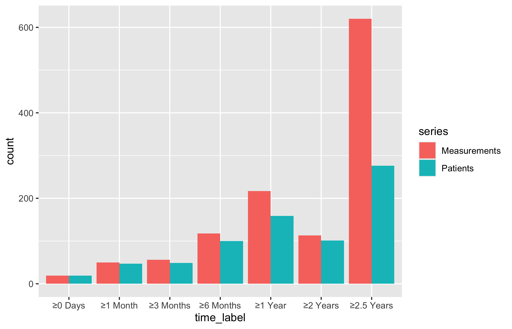

How many observations fall in each category, and which denominator makes the comparison honest? Bar charts answer the count question directly and switch to proportions when cohort size would otherwise dominate the story.
11.1 When to use it
A bar chart answers a counting question. How many patients had a concomitant CABG this year? What fraction arrived in NYHA class III or IV? How did the size of each annual cohort change over the study period? Whenever the thing you want to show is a count or a proportion of a category, and you want it broken out across a second axis (usually time), the bar chart is the plain, honest display to reach for. The geometry is familiar, but the denominator still needs saying.
There are two related jobs in this chapter, and the package splits them across two functions. hv_eda()(Ehrlinger 2026) is the exploratory workhorse you point at a single variable to see how its categories fall out across a reference axis; it is the same function that draws scatter plots for continuous columns, but here we stay with the categorical case where it returns bars. hv_longitudinal() is the reporting display: a grouped bar chart of how many patients and how many measurements you have at each follow-up window, the figure you put at the front of a longitudinal results section so the reader knows how much data backs the later curves.
Both hand back a bare ggplot (or, for the longitudinal table, a panel you compose with patchwork). You dress them with colour scales, labels, and a house theme using the usual +.
11.2 The data it needs
hv_eda() expects one row per observation with a reference axis in x_col (here the surgery year) and the variable of interest in y_col. It does not ask you to tell it whether that variable is categorical: eda_classify_var() inspects the column and decides. Numeric 0/1 and small-integer columns come back as "Cat_Num", character columns as "Cat_Char", and continuous columns as "Cont". The classifier is worth running on the whole frame before you build anything, so you know which columns will draw as bars and which as a scatter.
# Auto-detected types for each columnsapply(dta_eda, eda_classify_var)
year op_years male cabg nyha valve_morph
"Cont" "Cont" "Cat_Num" "Cat_Num" "Cat_Num" "Cat_Char"
ef lv_mass peak_grad
"Cont" "Cont" "Cont"
hv_longitudinal() is fussier: it expects pre-aggregated long-format data, one row per time-window by series combination, with a count column. You do not hand it raw patient records. sample_longitudinal_counts_data() derives that shape from a simulated 300-patient registry so the recipe runs end to end.
11.3 Inspect it
Build the hv_longitudinal S3 object once and inspect its class and metadata before plotting. The metadata records the count, interval, and series columns that the plot method will use.
Start from the bare panel for hv_longitudinal() so you can see what the constructor produced before any styling. Reuse the inspected object across both panels below.
plot(lc)

That is the raw grouped bar chart: paired bars at each follow-up window, no fill colours, no axis range, no theme. Now layer on the house style. We give the two series distinct fills, expand the y-axis with coord_cartesian() so the tallest bar has headroom, and let hv_legend_inside() drop the legend into the empty upper-left corner where the short early-window bars leave room.
Figure 11.1: Grouped bar chart of patient and measurement counts at each follow-up window
11.5 Read it
A grouped count bar chart is read one window at a time. Follow-up window is on the x-axis and raw count is on the y-axis. Within each window, compare unique patients with all measurements contributed by those patients; these are two different denominators, not percentages of a shared total. The bars describe data availability and cannot establish why follow-up thinned or whether an outcome changed. A few things to look for:
Measurements should always be at least Patients. Each patient contributes one or more measurements, so the Measurements bar should never sit below the Patients bar in the same window. If it does, either the series are swapped or the count construction needs checking.
The shape across windows. These are disjoint follow-up intervals, not a cumulative at-risk count, so the bars do not have to decline from left to right. A thin interval identifies a part of follow-up with little information; check its counts before trusting a curve there.
The gap between the two bars. A wide gap means some patients contributed more than one measurement within that interval. A narrow gap means most represented patients contributed one measurement.
11.6 Adapt it
The remaining variants come from hv_eda(), which draws the single-variable exploratory bars.
11.6.1 Binary categorical: count bars
Numeric 0/1 columns are classified as "Cat_Num", and NA values appear as an explicit "(Missing)" fill level rather than vanishing, so you can colour and count them. The y_label argument sets the title and fill-legend name in place of the raw column name. Here, sex by surgery year.
Figure 11.2: Count bars of a binary categorical variable by surgery year, with missing values kept as an explicit level
The x-axis is surgery year and the y-axis is the number of records in that year. Each bar is partitioned into female, male, and missing records, so the annual record count is the denominator behind the comparison. Differences in the bars describe case mix and volume; they do not show that calendar time caused the mix to change.
11.6.2 Binary categorical: percentage bars
When you care about the mix rather than the absolute volume, set show_percent = TRUE. That switches geom_bar() to position = "fill", so every year’s bar runs the full height and the fill shows the proportion in each category. This is the version to use when annual cohort sizes vary a lot and a raw count would tell you more about volume than about case mix.
Figure 11.3: Percentage bars of a binary categorical variable by year, with each bar filling the full height to show case mix
Here each year’s full bar is the denominator and the segments sum to 100%. Compare shares rather than heights, and remember that equal-height bars can sit on very different numbers of patients. The display does not estimate a CABG effect or explain why practice changed.
11.6.3 Ordinal and multi-level categorical
Columns with more than two numeric levels render as stacked count bars, one level per fill colour. For an ordered grade such as NYHA class, a reversed diverging palette ("RdYlGn") carries the severity ordering visually, from green at the mild end through yellow to red at the severe end, so the reader sees worsening case mix without reading the legend.
Figure 11.4: Stacked count bars of an ordinal NYHA class by year, with a diverging palette carrying the severity ordering
11.6.4 Character categorical
String columns are classified as "Cat_Char" and also produce stacked count bars. The difference is that character levels are ordered alphabetically by default rather than by an implied scale, so use scale_fill_manual() to assign colours that carry clinical meaning, here one hue per valve morphology type.
Figure 11.5: Stacked count bars of a character categorical variable by year, with one hue per valve morphology type
11.6.5 Longitudinal: the numeric table panel
hv_longitudinal() carries a second panel. plot(lc, type = "table") renders the same counts as coloured text below the x-axis labels, the numeric companion to the bars. On its own it is sparse; it is meant to sit under the bar chart.
Stack the bar chart above the table with patchwork’s / operator, then use plot_layout(heights = c(3, 1)) to give the bars three times the vertical space. This is the figure you actually publish: the bars carry the visual story and the table gives the reader the exact counts.
Figure 11.6: Two-panel longitudinal display with the grouped bar chart above and the matching count table below
11.7 Deliver it
Use Finish and deliver the result once the caption names whether the bars show counts or within-year percentages. For the longitudinal display, keep the count table attached to the bars so the clinical reader can see the exact patient and measurement totals.
11.8 Pitfalls
Count versus proportion. A raw count bar and a show_percent = TRUE bar answer different questions. If annual cohort sizes swing widely, a count chart can make a stable case mix look like a trend, and a percentage chart can hide a collapse in volume. Show whichever matches the claim, and say which it is.
Dropping the missing level.hv_eda() keeps NA as an explicit "(Missing)" level on purpose. Recolouring it to white or styling it away hides how much of each bar is unknown. Leave it visible, or at least account for it in the caption.
Feeding hv_longitudinal() raw records. It expects pre-aggregated one-row-per-window-per-series data. Hand it patient-level rows and the counts will be wrong without an error. Aggregate first, or use sample_longitudinal_counts_data() as the template for the shape.
Reading a stacked bar’s middle segments. Only the bottom segment of a stacked bar starts from a common baseline; the middle segments float, so their heights are hard to compare across years. If a middle category is the story, pull it out into its own binary count or percentage bar.
Ehrlinger, John. 2026. hvtiPlotR: HVTI Ggplot2 Themes and Clinical Plot Functions for the Cleveland Clinic Heart & Vascular Institute. https://github.com/ehrlinger/hvtiPlotR.